|
4-4-2
|
Ecuador | 2 | - | 1 | Germany |
3-4-2-1
|
| HT 1-1 | ||||||
|
FIFA World CupThursday 25 June 2026
|
||||||
- Venue
- New York New Jersey Stadium
- Attendance
- 80,663
- Referee
- Mary Victoria Penso
Goal9'
N. Angulo
Assist: P. Vite
Yellow card43'
P. Hincapié
Yellow card50'
A. Franco
- 2
Substitution64'
E. Valencia
K. Rodríguez
A. Franco
Á. Preciado
Substitution71'
P. Hincapié
P. Estupiñán
Goal77'
G. Plata
Assist: K. Rodríguez
- 2
Substitution85'
J. Yeboah
F. Torres
N. Angulo
J. Caicedo
Yellow card89'
G. Plata
Whistle45+5'
45+5'
Goal2'
L. Sané
Assist: F. Wirtz
Yellow card44'
A. Pavlović
Substitution46'
A. Pavlović
A. Stiller
- 2
Substitution60'
K. Havertz
D. Undav
J. Kimmich
M. Thiaw
Substitution64'
F. Nmecha
M. Beier
Substitution73'
F. Wirtz
P. Groß
Ecuador | |
|---|---|
Goalkeeper | |
| 1 | H. Galíndez |
Defender | |
| 3 | P. Hincapié 43'71' |
| 4 | J. Ordoñez |
| 6 | W. Pacho |
| 21 | A. Franco 50'64' |
Midfielder | |
| 9 | J. Yeboah 85' |
| 15 | P. Vite |
| 20 | N. Angulo 9'85' |
| 23 | M. Caicedo |
Forward | |
| 13 | E. Valencia 64' |
| 19 | G. Plata 77'89' |
Substitutes | |
| 2 | F. Torres 85' |
| 7 | P. Estupiñán 71' |
| 11 | K. Rodríguez 64' |
| 16 | J. Caicedo 85' |
| 17 | Á. Preciado 64' |
Germany | |
Goalkeeper | |
| 1 | M. Neuer |
Defender | |
| 2 | A. Rüdiger |
| 4 | J. Tah |
| 6 | J. Kimmich 60' |
Midfielder | |
| 5 | A. Pavlović 44'46' |
| 10 | J. Musiala |
| 17 | F. Wirtz 73' |
| 19 | L. Sané 2' |
| 22 | D. Raum |
| 23 | F. Nmecha 64' |
Forward | |
| 7 | K. Havertz 60' |
Substitutes | |
| 13 | P. Groß 73' |
| 14 | M. Beier 64' |
| 16 | A. Stiller 46' |
| 24 | M. Thiaw 60' |
| 26 | D. Undav 60' |


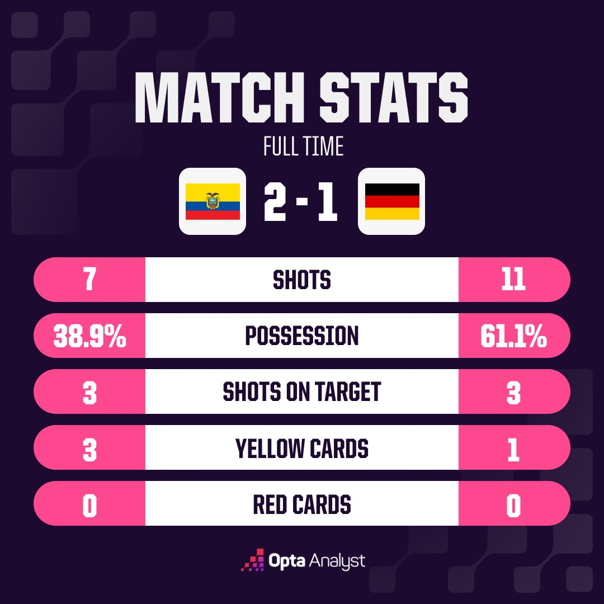
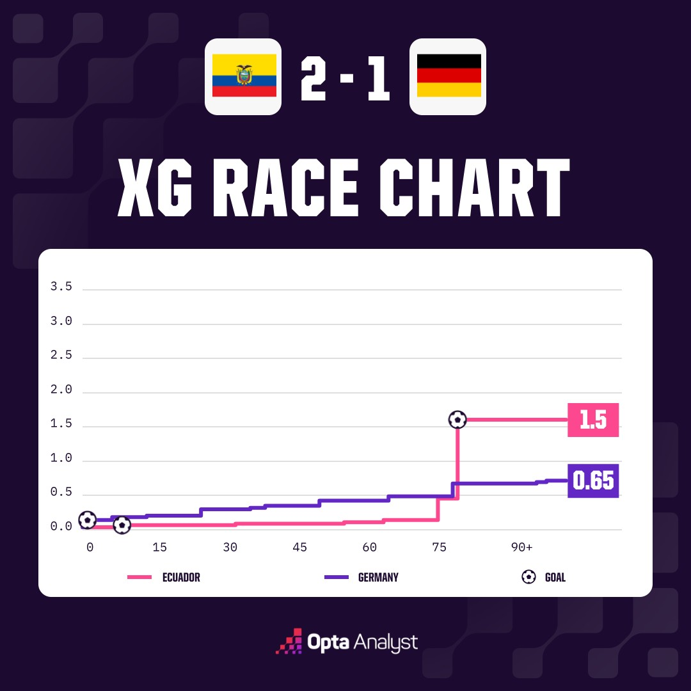
99'
Ecuador have won after conceding the opening goal in the FIFA World Cup for the first time since 20th June 2014 against Honduras (3 games without a win).
99'
Germany attempted 11 shots in this game, their lowest total in a single match in the 2026 FIFA World Cup.
99'
Ecuador attempted 7 shots in this game, their lowest total in a single match in the 2026 FIFA World Cup.
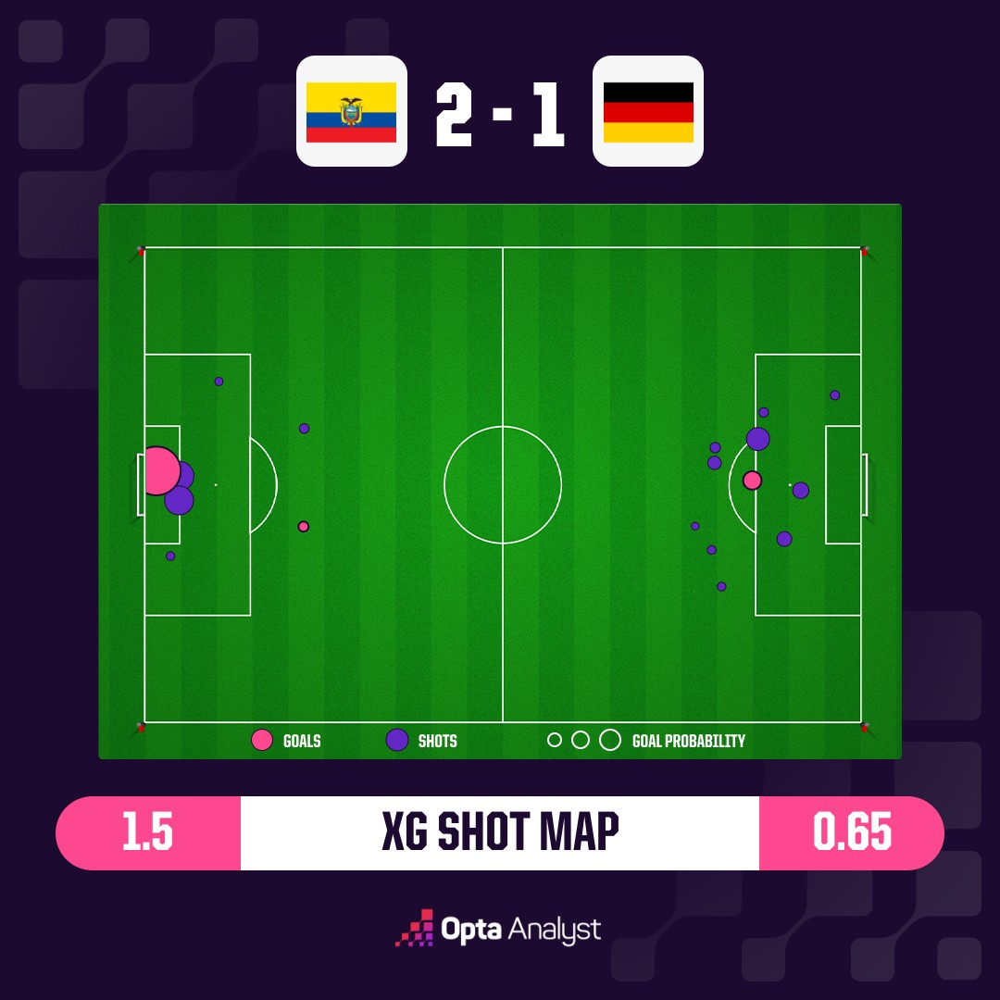
90+8'
FULL-TIME! The referee sounds the final whistle, and it’s all over. Ecuador get the win, with a 2-1 triumph over Germany.
90+6'
A free-kick in a dangerous position now for Ecuador, after a foul from Pascal Groß on Gonzalo Plata. Can Ecuador make Germany pay for that rashness from Pascal Groß?
90+5'
MISS! The score remains 1-2, with Ecuador relieved after Germany’s Pascal Groß goes for goal but sends their attempt off target. Not one to write home about, that one.
90+5'
It’s backs to the wall now — Ecuador throwing everything into defending their advantage, with a flurry of crucial interventions.
90+3'
Plenty of the ball in the last quarter-of-an-hour of this match for Germany, but still Ecuador stand firm, despite having had only 23.50% of the ball in that period. Can Germany make their possessional dominance count?
90+3'
That is a disappointing effort from Deniz Undav, who went for glory but got their attempt wrong, and the shot sailed off target. A frustrating moment for Germany.
90+3'
Germany are having plenty of the ball, with 75.98% possession in the last 15 minutes. However, they have been unable to transfer that possessional dominance into a goal during that spell, and are not even generating shooting opportunities, so Ecuador may not be unduly alarmed.
90+1'
It’s backs to the wall now — Ecuador throwing everything into defending their advantage, with a flurry of crucial interventions.
89'
A yellow card for Ecuador's Gonzalo Plata. They will have to walk a tightrope for the rest of this match, and Germany will likely look to target them and draw a second bookable offence.
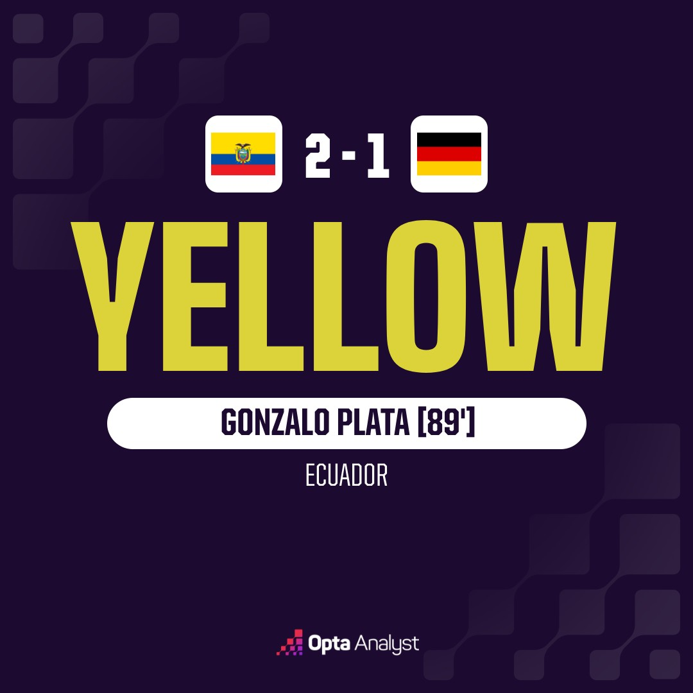
89'
Can Germany make this chance count? They have won a free-kick in a threatening position after a foul from Gonzalo Plata on Jamal Musiala. Will Ecuador's defence be tested here?
88'
A chance now for Germany to get a good delivery into the box, after the ball is diverted behind for a corner. Germany have been pushing for what would be a key goal, but Ecuador have stood firm so far.
88'
Neither team has had a shot in the past 10 minutes, as this match just enters something of a down period. Germany have seen more of the ball, with 72 per cent possession, but Ecuador are keeping them away from goal. There is still a chance the match will spark into life, though.
87'
Germany are racking up corners and free-kicks - they’re starting to dominate in dangerous areas.
87'
Good play from Maximilian Beier, who draws a foul from Pervis Estupiñán to hand Germany a free-kick in a dangerous position. Will they create something from this set-piece?
87'
Despite the early setback, Germany are beginning to find some rhythm. Can they turn this possession into pressure?
86'
A rash challenge from Kevin Rodríguez, who sends Malick Thiaw tumbling, giving Germany a free-kick. It is not in a threatening position, but it gives them a chance to get back on the ball.
85'
A change for Ecuador, as they are forced into a substitution with Nilson Angulo having sustained an injury. Jordy Caicedo is coming on for Ecuador now.
85'
John Yeboah’s match is over as Ecuador decide to make a substitution. Félix Torres enters the field in what looks like a tactical change.
84'
A rash challenge from Maximilian Beier, who sends Pedro Vite tumbling, giving Ecuador a free-kick. It is not in a threatening position, but it gives them a chance to get back on the ball.
77'
Kevin Rodríguez has assisted his first goal in the 2026 FIFA World Cup.
77'
Gonzalo Plata has scored his first goal in the 2026 FIFA World Cup.
77'
GOAL! What a moment for Gonzalo Plata, who has found the back of the net from inside the 18-yard box to put Ecuador ahead in the closing stages. Will that be enough for Ecuador to claim the victory?
77'
CORNER! The pressure is building for Ecuador as they win a set-piece after Kevin Rodríguez's attempt is blocked by Angelo Stiller and diverted out of play.
76'
What a miss! That was a huge chance for Leroy Sané, but they have failed to convert. What an opportunity that was for Germany.
76'
There are 15 minutes plus added time to go in this match. Germany have had more of the ball so far with a possession figure of 58.30%, while Ecuador have had 41.70%.
75'
A rash challenge from Gonzalo Plata, who sends Jamal Musiala tumbling, giving Germany a free-kick. It is not in a threatening position, but it gives them a chance to get back on the ball.
74'
In the last 15 minutes, it is Ecuador who have dominated the ball, having seen 65.26% of the possession, yet they have not been able to go and turn that into a goal just yet, with their opponents standing firm.
73'
Germany are making a tactical change. Florian Wirtz is leaving the field and in their place comes Pascal Groß – we will soon see if this switch has the desired impact.
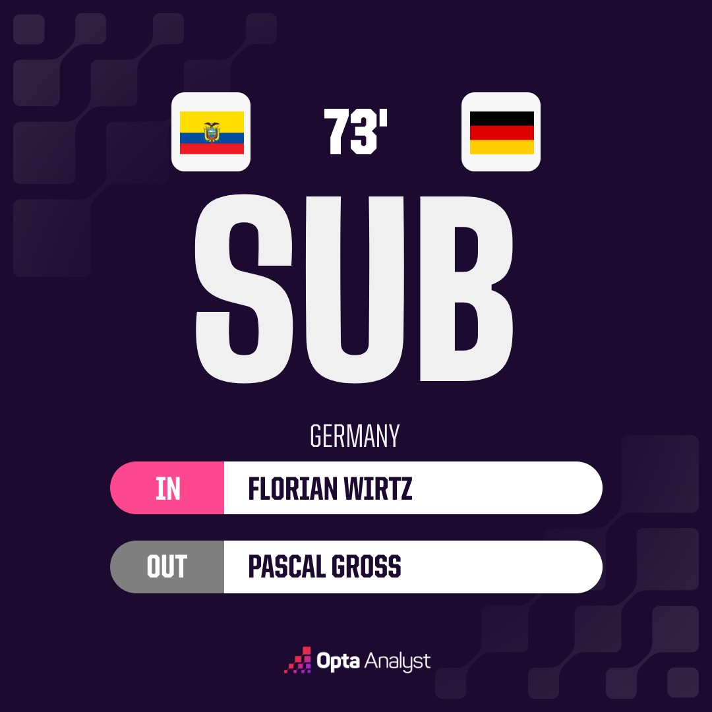
73'
MISSED! That is really poor from Gonzalo Plata, who fails to convert from a golden opportunity, with the goal gaping. Will Ecuador pay for their profligacy, or can they put that miss behind them?
71'
An enforced substitution for Ecuador, as Piero Hincapié cannot carry on after sustaining an injury. Pervis Estupiñán has hastily warmed up and now made their way onto the pitch in Piero Hincapié's place.
66'
With 25 minutes left to play, this game is about to go into its final quarter. So, that seems a good chance to check on the shot count. Ecuador have had 4 efforts, with 2 of those hitting the target. Germany, on the other hand, have had 8 shots, getting 2 of those attempts on target.
65'
Good play from Nilson Angulo, who draws a foul from Malick Thiaw to hand Ecuador a free-kick in a dangerous position. Will they create something from this set-piece?
64'
A substitution for Germany sees Felix Nmecha replaced by Maximilian Beier. There does not appear to be any obvious sign of an injury, so that is a tactical switch.
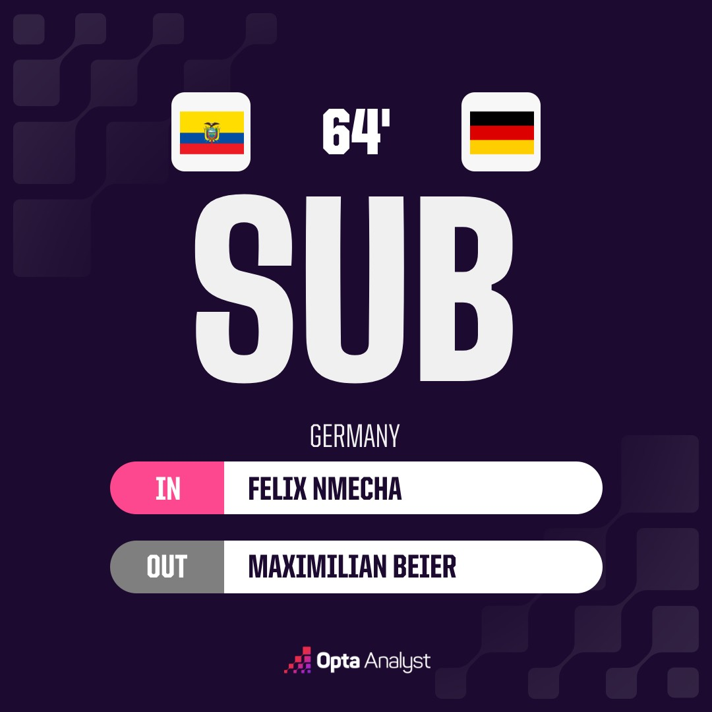
64'
Ecuador are making a tactical change. Alan Franco is leaving the field and in their place comes Ángelo Preciado – we will soon see if this switch has the desired impact.
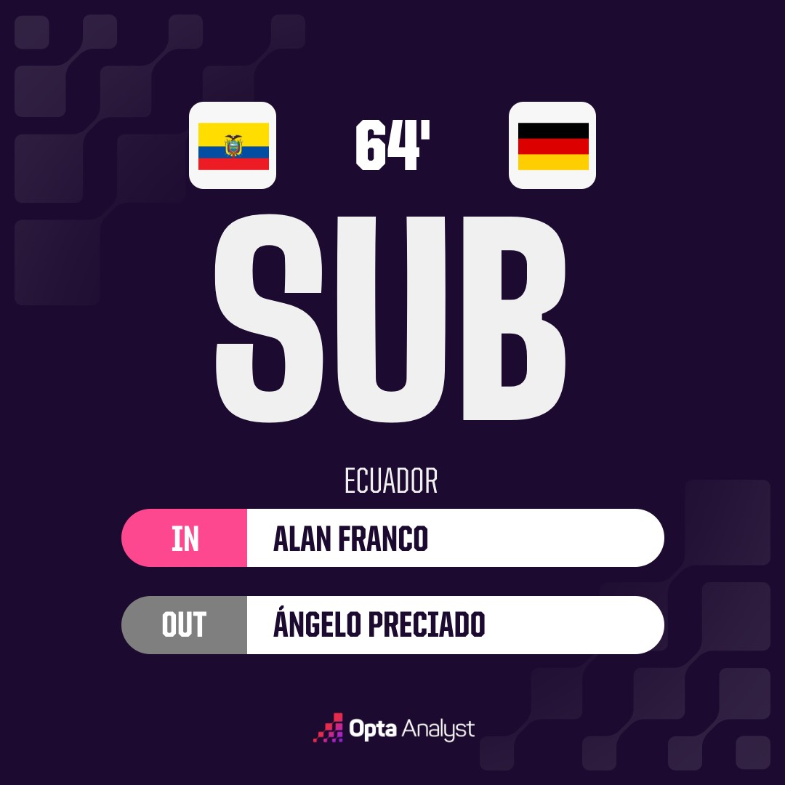
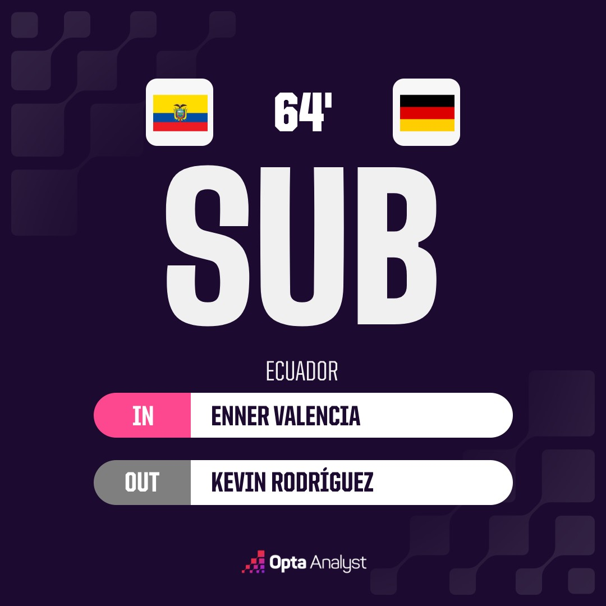
64'
Substitution! Kevin Rodríguez replaces Enner Valencia for Ecuador as the manager shuffles the pack. Can Kevin Rodríguez make an impression as this match continues?
63'
That might have been going in! A fantastic block from Willian Pacho, who gets in the way of a goal-bound effort from Florian Wirtz. Would the goalkeeper have been beaten? We will never know.
62'
SAVE! A shot from outside the box by Ecuador Enner Valencia was heading in, but Germany Manuel Neuer keeps it out with a smart stop.
60'
Joshua Kimmich’s match is over as Germany decide to make a substitution. Malick Thiaw enters the field in what looks like a tactical change.
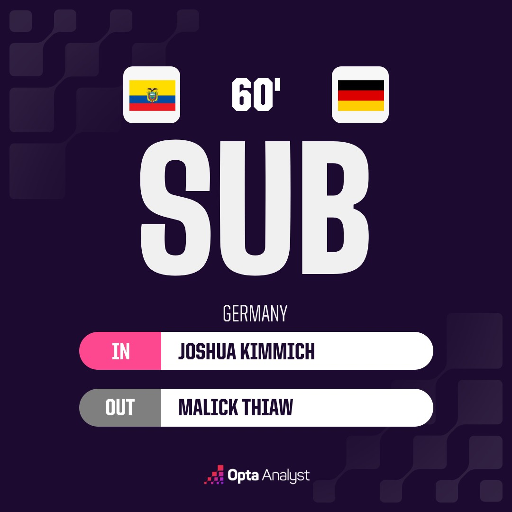
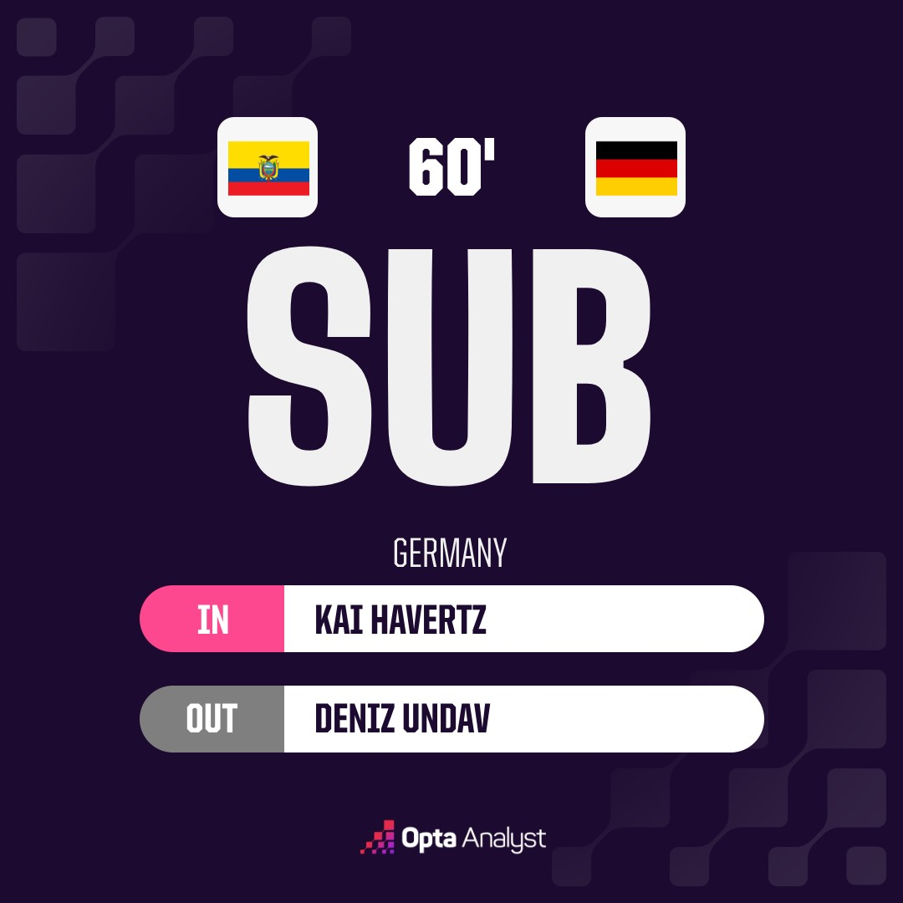
60'
Substitution! Deniz Undav replaces Kai Havertz for Germany as the manager shuffles the pack. Can Deniz Undav make an impression as this match continues?
59'
Leroy Sané goes in on Willian Pacho and concedes a foul. The free-kick is not in a particularly dangerous area from Germany’s viewpoint, though.
58'
A foul from Moisés Caicedo on Jamal Musiala sees Germany win a free-kick, but it is not in a dangerous position, so Ecuador should be confident they can defend it easily enough.
56'
Jonathan Tah goes in on Nilson Angulo and concedes a foul. The free-kick is not in a particularly dangerous area from Germany’s viewpoint, though.
54'
A chance goes begging as Moisés Caicedo gets off a shot that does not hit the target. They might have done better with that one, but instead it is a goal-kick to Germany.
54'
It is a corner now to Ecuador, with Germany somewhat hanging on here as they look to hold out for a positive result. Can Ecuador make something of this set-piece opportunity?
50'
Yellow card! Alan Franco will have to be careful from now on after they are cautioned.
49'
This could be a chance for Ecuador, after David Raum fouls Joel Ordoñez, handing them a free-kick in a threatening area. A good set-piece from here could really test the Germany defense!
47'
Decision overturned! The referee’s original call is deemed to be wrong by VAR, and after a check, it has been changed. The technology has played a major role there.
47'
We are going to VAR. The game has stopped for now with the assistant referee in the video booth now set to review the incident. Will the decision be altered?
46'
A rash challenge from Leroy Sané, who sends Pedro Vite tumbling, giving Ecuador a free-kick. It is not in a threatening position, but it gives them a chance to get back on the ball.
46'
Aleksandar Pavlović’s match is over as Germany decide to make a substitution. Angelo Stiller enters the field in what looks like a tactical change.
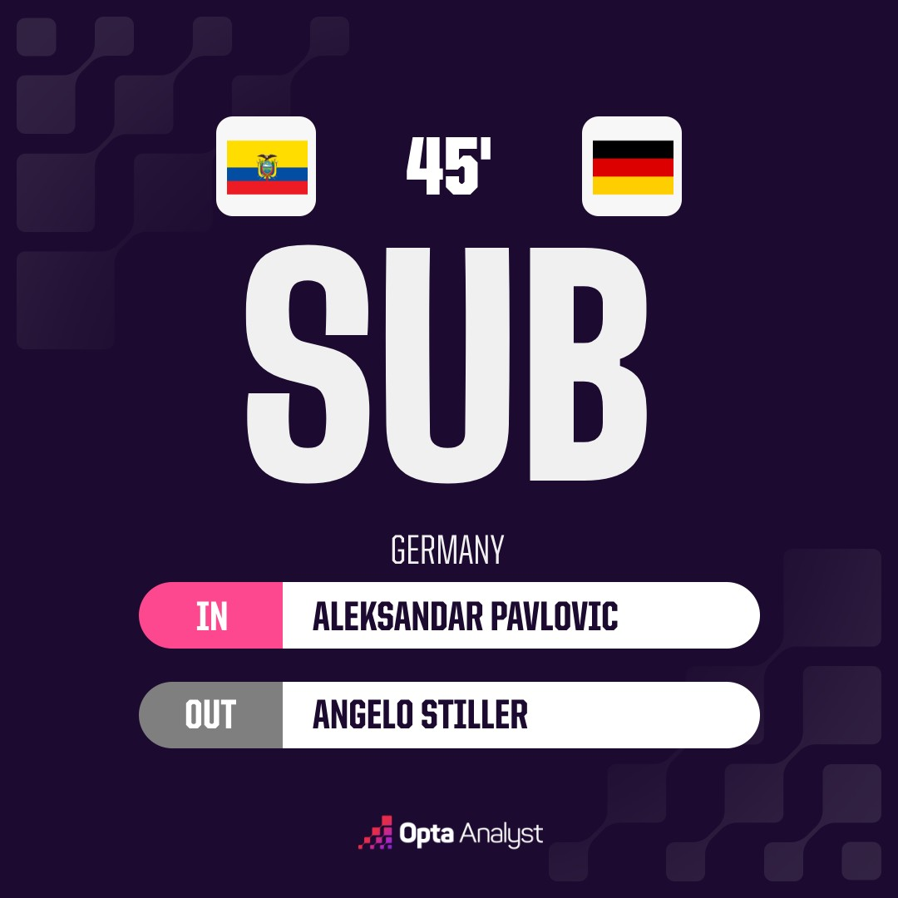
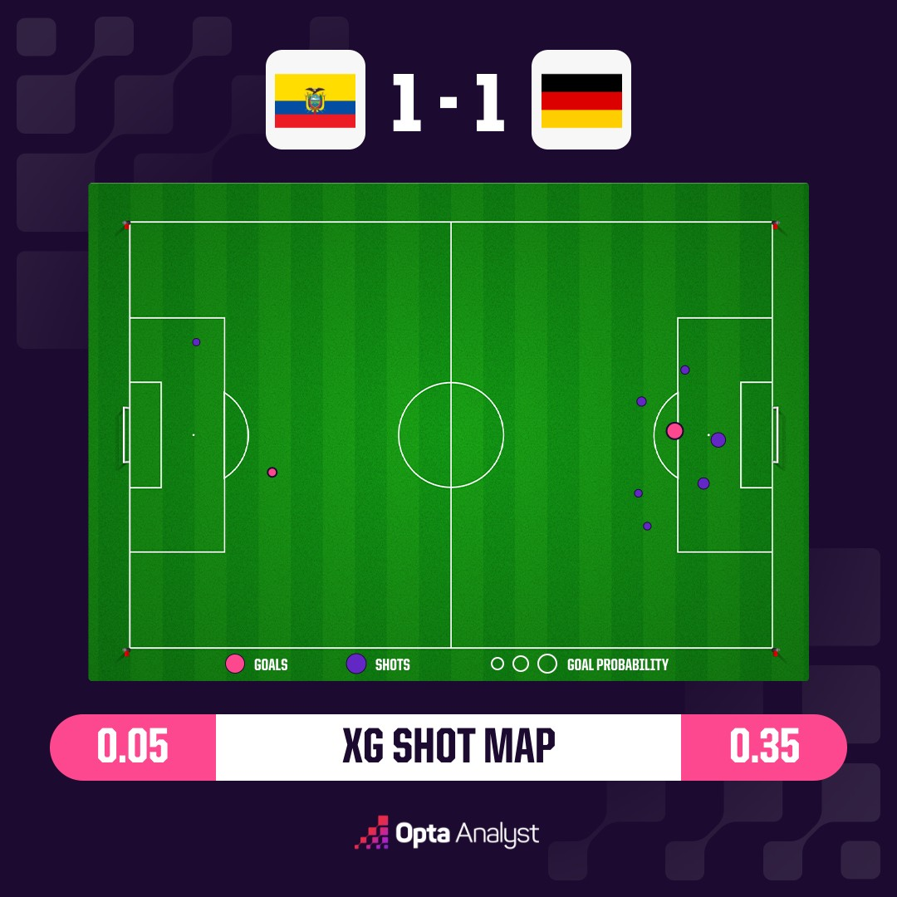
45+5'
Half-time! The referee blows the whistle and it is time for the interval. As we reach the break it is Ecuador 1-1 Germany at New York New Jersey Stadium.
45+4'
BLOCKED! That was close. Florian Wirtz got off a shot, which was heading in, but Piero Hincapié was on hand to make a vital intervention. Great block!
45+4'
Neither team has had a shot in the past 10 minutes, as this match just enters something of a down period. Germany have seen more of the ball, with 75 per cent possession, but Ecuador are keeping them away from goal. There is still a chance the match will spark into life, though.
45+2'
Plenty of the ball in the last quarter-of-an-hour of this match for Germany, but still Ecuador stand firm, despite having had only 21.72% of the ball in that period. Can Germany make their possessional dominance count?
44'
BOOKING! Yellow card for Aleksandar Pavlović, who is penalised for a foul. The referee waves away their remonstrations, and now they will have to be careful.
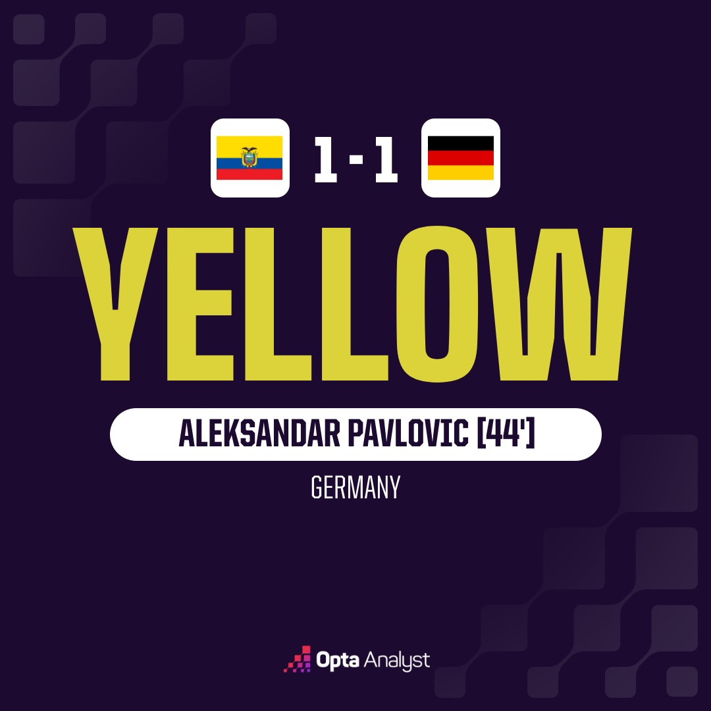
44'
Free-kick! A foul from Aleksandar Pavlović on Enner Valencia. It is well away from Germany’s goal, so it is unlikely to result in a chance for Ecuador.
43'
That is a booking for Piero Hincapié, who has received their first yellow card. They are not happy with the decision, but it is done now, and they will have to be careful for the rest of this game.
43'
A rash challenge from Piero Hincapié, who sends Leroy Sané tumbling, giving Germany a free-kick. It is not in a threatening position, but it gives them a chance to get back on the ball.
38'
Shot blocked! Felix Nmecha unleashes an attempt at goal, but the ball does not reach its target thanks to Willian Pacho, who makes a solid block to stem the danger – for now.
35'
Ecuador have a corner to defend now after Joel Ordoñez diverts an attempt from Jamal Musiala out of play. Can Germany take this chance to get a good delivery in and really test their opponent’s defence?
32'
Plenty of the ball in the last quarter-of-an-hour of this match for Ecuador, but still Germany stand firm, despite having had only 29.30% of the ball in that period. Can Ecuador make their possessional dominance count?
32'
BLOCK! An intervention from Jonathan Tah might have just prevented a goal, with the defending player getting in the way of an attempt from Enner Valencia. Solid defending there!
31'
Plenty of the ball in the last quarter-of-an-hour of this match for Ecuador, but Germany have been able to hold them off with ease, with Ecuador having failed to even muster a shot at goal.
25'
Save! A big stop from Hernán Galíndez, who reacts to keep out Kai Havertz's attempt from inside the area.
24'
Neither team has had a shot in the past 10 minutes, as this match just enters something of a down period. Ecuador have seen more of the ball, with 62 per cent possession, but Germany are keeping them away from goal. There is still a chance the match will spark into life, though.
21'
A chance now for Ecuador to get a good delivery into the box, after the ball is diverted behind for a corner. Ecuador have been pushing for what would be a key goal, but Germany have stood firm so far.
20'
Free-kick! A foul from Alan Franco on Jamal Musiala. It is well away from Ecuador’s goal, so it is unlikely to result in a chance for Germany.
19'
A rash challenge from Piero Hincapié, who sends Joshua Kimmich tumbling, giving Germany a free-kick. It is not in a threatening position, but it gives them a chance to get back on the ball.
16'
Free-kick! A foul from Gonzalo Plata on Aleksandar Pavlović. It is well away from Ecuador’s goal, so it is unlikely to result in a chance for Germany.
16'
Nilson Angulo goes in on Aleksandar Pavlović and concedes a foul. The free-kick is not in a particularly dangerous area from Ecuador’s viewpoint, though.
14'
No luck! Felix Nmecha takes on a shot that, had they got it right, might have been set to test the goalkeeper, but instead it is sent off target and Ecuador come away unscathed.
12'
A foul from Gonzalo Plata on Joshua Kimmich sees Germany win a free-kick, but it is not in a dangerous position, so Ecuador should be confident they can defend it easily enough.
11'
It’s been tight so far, and Ecuador are making sure it stays that way with strong defensive discipline and well-timed clearances.
10'
This could be a chance for Germany, after Alan Franco fouls Felix Nmecha, handing them a free-kick in a threatening area. A good set-piece from here could really test the Ecuador defense!
9'
Pedro Vite has assisted his first goal in the 2026 FIFA World Cup.
9'
Ecuador ended a run of 242 minutes without a goal in the FIFA World Cup, their longest since going 214 minutes without scoring from 15th June 2006 to 15th June 2014.
9'
Nilson Angulo has scored his first goal in the 2026 FIFA World Cup.
9'
WHAT A GOAL! That’s the moment Ecuador had been waiting for, as a long-range effort from Nilson Angulo has hauled them level. It’s all square now!
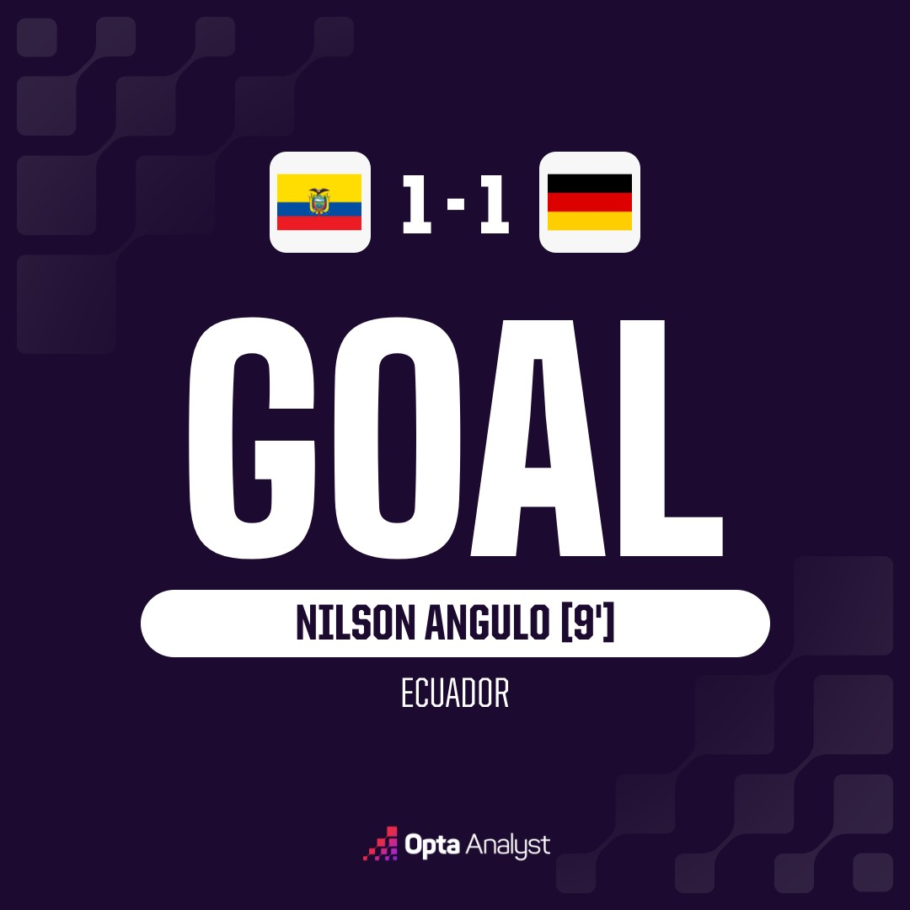
8'
A free-kick to Ecuador, as Jamal Musiala goes in and fouls Enner Valencia. However, Germany will not mind giving one away in this area too much, with plenty of distance to their goal.
7'
Ecuador may be behind, but they’re battling hard defensively to stop the gap from widening. A gritty response at the back.
7'
BLOCKED! That was close. Florian Wirtz got off a shot, which was heading in, but Joel Ordoñez was on hand to make a vital intervention. Great block!
7'
A free-kick to Germany, as Nilson Angulo goes in and fouls Joshua Kimmich. However, Ecuador will not mind giving one away in this area too much, with plenty of distance to their goal.
6'
A free-kick to Ecuador, as David Raum goes in and fouls John Yeboah. However, Germany will not mind giving one away in this area too much, with plenty of distance to their goal.
5'
This could be a chance for Germany, after Joel Ordoñez fouls Jamal Musiala, handing them a free-kick in a threatening area. A good set-piece from here could really test the Ecuador defense!
2'
Florian Wirtz has assisted his second goal in the 2026 FIFA World Cup.
2'
Leroy Sané has scored his first goal in the 2026 FIFA World Cup.
2'
GOAL! That is 1-0 to Germany! It has not taken long for the first goal of the game to arrive, with Leroy Sané finding the back of the net to put Germany in front. That is just the start the neutral would have wanted to see, with plenty of scope for more goals now.
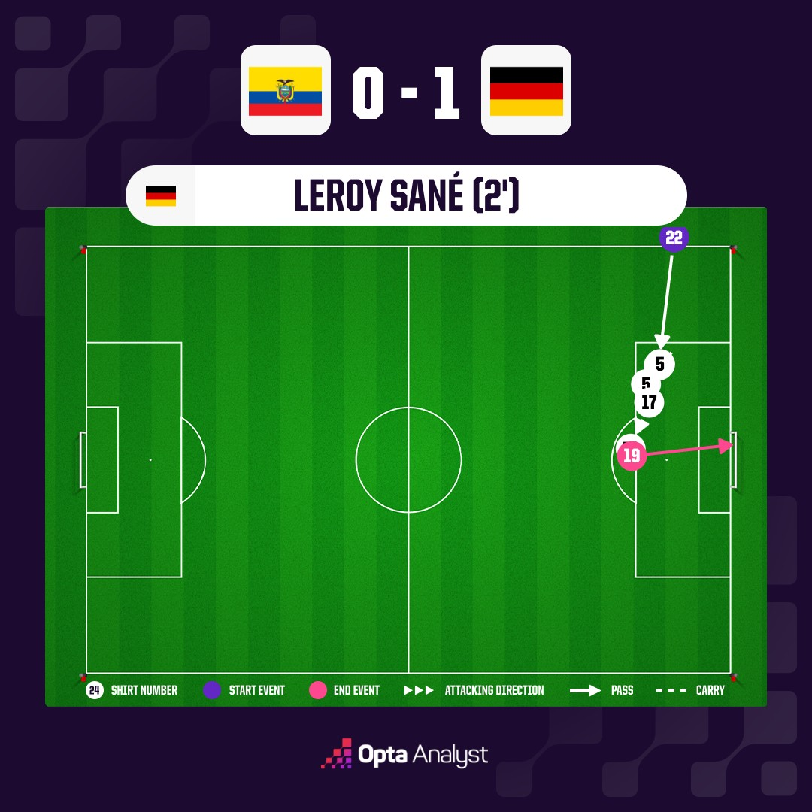
1'
And we are off! Strap in, folks, for this mouthwatering encounter between Germany and Ecuador at New York New Jersey Stadium.
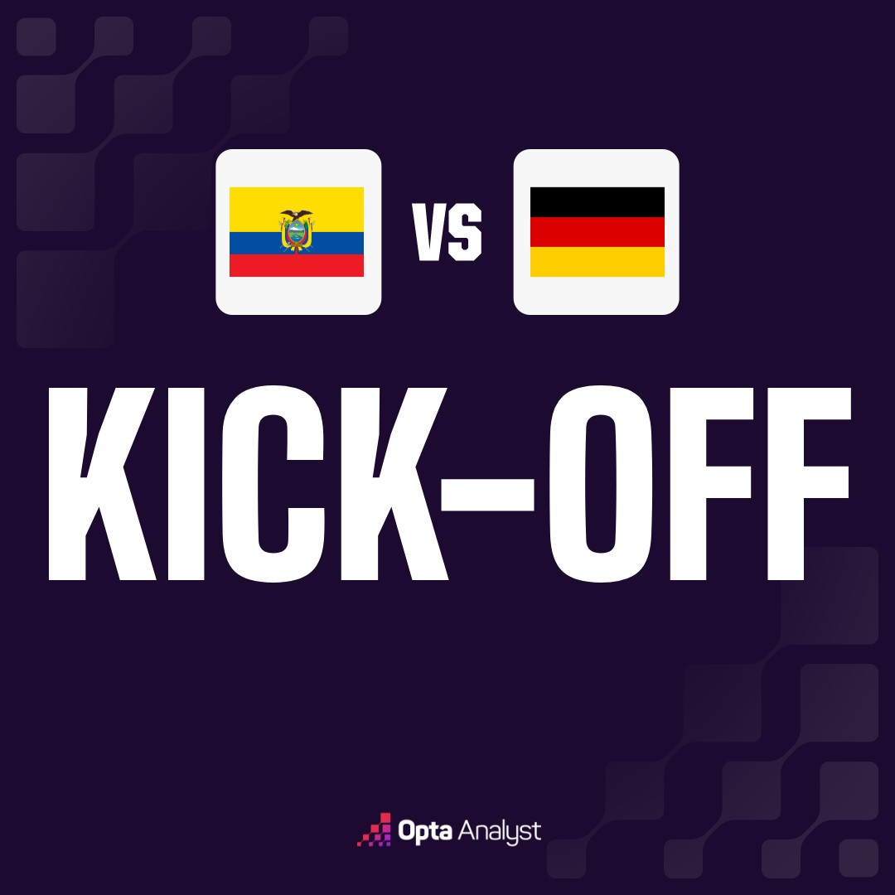
Manuel Neuer is making his 22nd appearance in the FIFA World Cup.
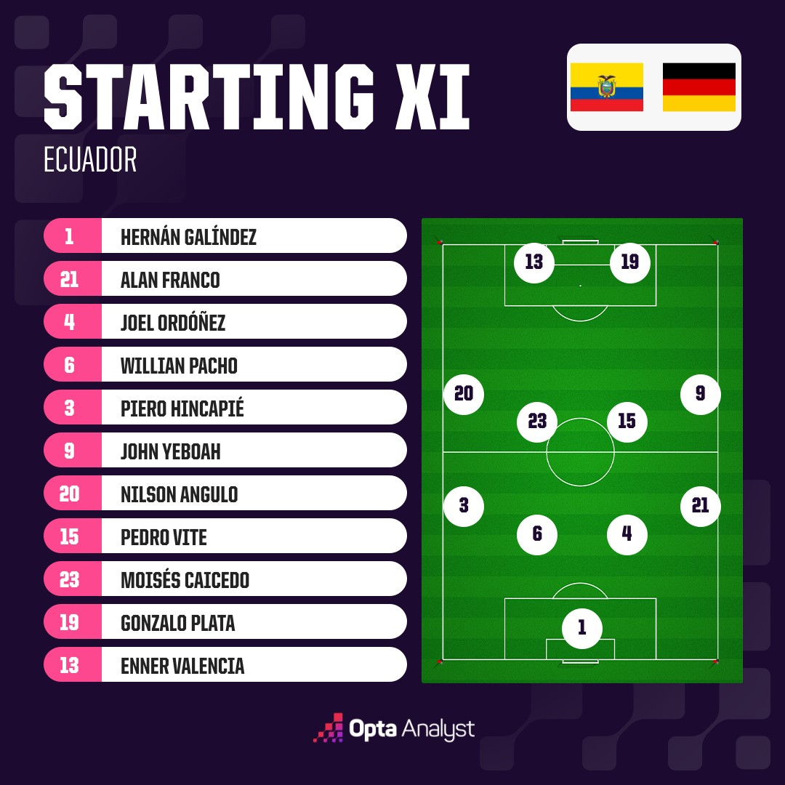
Germany have won their last 7 matches in a row
There have been fewer than 3 goals scored in total in each of Ecuador's last 7 games
Ecuador face Germany for a FIFA World Cup group stage match at New York New Jersey Stadium on Thursday with the German side having already clinched a place in the Round of 32.
Ecuador played out a 0-0 draw in their last group stage match against Curaçao on June 20 to earn their first point in the competition this season. In six games this year, they have two wins, three draws, and one loss.
Germany won their last group stage game on June 20, beating Côte d'Ivoire 2-1 at Toronto Stadium, their 11th consecutive victory. Deniz Undav was the only player on the scoresheet, netting a brace.
Germany lead the group on six points. Ecuador's one point places them third, currently out of the knockout round places but still on for a place in the round of 32.
With three points, Côte d'Ivoire are second in the group, well-positioned to advance to the Round of 32. Curaçao are facing elimination, sitting fourth on one point.
Germany won the previous meeting between the clubs, triumphing 4-2 in May 2013.
Ecuador have yet to find the target in World Cup play this season. Undav has been the leading attacking threat for Germany, scoring on three occasions in this World Cup campaign. The attacker is tied at the top of the scoring charts in the competition.
Germany have scored in each of their last 11 games across all competitions. They have hit the back of the net in every match since a World Cup Qualifiers meeting with Slovakia in September 2025. The Ecuadorean side, meanwhile, are scoreless in their last 192 minutes of play. They last found the net against Guatemala in a 7 June friendly.
In their last six matches in all competitions, Ecuador have won two, drawn three and lost one. The Ecuadorean side scored seven and conceded four in that stretch, scoring first in three of the six contests. They had three first-half goals, while their opponents netted once in the first 45 minutes. The German side have won each of their last six. The German side scored 21 and conceded seven in that period, netting first in four of the six. They had eight goals in the first half, while their opponents netted five times before the break.
-
General
Possession 38.9% 38.8561.1561.1% Possession lost in defensive half 35 352929 Possession lost in middle third 52 525353 Duels 110 110108108 Duels success rate 49.1% 49.09148.14848.1% Aerial duels 20 202020 Aerial duels won 45.0% 455555.0% Successful dribbles 9 977 Fouls won 10 101515 Offsides 0 000 Corner awarded 3 322 -
Distribution
Passes 378 378592592 Long passes 50 503737 Long passes proportion (%) 13.2% 13.2286.256.3% Passing accuracy 82.5% 82.5487.33187.3% Passes in opponents' half 231 231329329 Passing accuracy in opponents' half (%) 80.1% 80.08783.89183.9% Total passes in the final third 117 117152152 Passing accuracy in final third (%) 68.4% 68.37673.02673.0% Forward passes 233 233348348 Forward passes (%) 61.6% 61.6458.78458.8% Through balls 7 722 Final third entries 66 667777 Penalty area entries 23 232222 Total open play crosses 8 81111 Crosses 13 131616 Crossing accuracy 23.1% 23.07731.2531.3% -
Attack
Goals 2 211 Shots 7 71111 Shots on target 3 333 Blocked shots 2 255 Headed shots 1 111 Shots outside the box 2 255 Shots inside the box 5 566 Shots accuracy excluding blocked shots 60.0% 605050.0% Shooting accuracy 42.9% 42.85727.27327.3% Key Passes 7 799 -
Defence
Tackles 26 262020 Tackles success rate 61.5% 61.5386565.0% Clearances 30 301515 Interceptions 12 1244 Recoveries 50 505050 Attacking third recovery 6 622 Defensive third recovery 26 263333 Midfield third recovery 18 181515 Recoveries in attacking half (%) 12.0% 1244.0% -
Discipline
Fouls conceded 15 151010 Yellow cards 3 311 Red cards 0 000